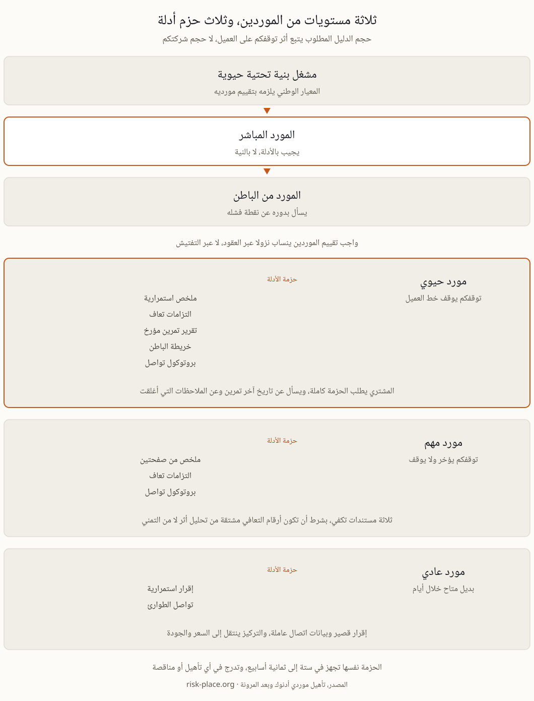

كيف يغربل التأهيل المسبق الموردين فعلا
يجري التأهيل لدى كبار مشتري الطاقة في الدولة، ومنهم كيانات مجموعة أدنوك، عبر بوابة الموردين، ويقيم القدرة الفنية والمتانة المالية وأنظمة الجودة وضوابط الصحة والسلامة والبيئة وسجل التسليم مجتمعة. وتستغرق العملية عادة من شهرين إلى ستة أشهر، وتتطلب قوائم مالية مدققة لسنوات حديثة، ولمن يتجه إلى المناقصات تقوي شهادة القيمة المحلية المضافة الملف بدرجة كبيرة، مع توقعات تدور غالبا حول 30 بالمئة للفوز بالأعمال. وحتى هنا لا جديد على أحد، فهذه الطبقات معروفة ولها استشاريون ونماذج جاهزة، والمتقدم المنظم يجهزها في وقته. لكن الملفات المتشابهة في هذه الطبقات كثيرة، والفرق بينها لا يصنع عند نقطة قوة يملكها الجميع، بل عند نقطة يتركها أغلبهم فارغة.
الطبقة التي يتركها أغلب المتقدمين فارغة
تلك النقطة هي استمرارية التوريد، أي ماذا يحدث لتسليمكم حين تتعطل منشأتكم أو تسقط أنظمتكم أو يتوقف موردوكم أنتم. والسؤال يبدو في الاستبيان بريئا وقصيرا، لكن قارئه في جهة المشتري لا يبحث عن نية حسنة بل عن قدرة موصوفة بأرقام. والمشتري الذي يعتمد خط إنتاجه على قطعتكم لا يهمه سبب توقفكم، حريقا كان أم برمجية فدية أم مورد ثانوي في بلد ثالث، فالمشتريات تسعر خطر توقفكم أصلا لا رواية هذا التوقف. ولذلك تخسر الإجابات العامة من نوع لدينا خطة استمرارية معتمدة نقاطا بدل أن تكسبها، لأنها تعلن وجود وثيقة ولا تعلن قدرة. والفرق بين الاثنين هو موضوع هذه الصفحة كلها، وأساسه واحد لكل مورد مهما اختلف حجمه، معرفة ما ينكسر عندكم أولا وكم يستغرق إصلاحه.
لماذا ارتفع السقف الآن
أربعة ضغوط مجتمعة رفعت هذا السؤال من هامش الاستبيان إلى متنه خلال سنوات قليلة.
- المعايير الوطنية تنساب نزولا. يلزم المعيار الوطني NCEMA 7000 مشغلي البنية التحتية الحيوية بتقييم ترتيبات استمرارية مورديهم الحيويين، والتقييم يصل إليكم في صورة استبيان أو بند تعاقدي.
- صورة التهديدات الإقليمية. برمجيات الفدية وحوادث المجال الجوي حولت فرضية مورد متوقف أسبوعا كاملا من احتمال نظري إلى سيناريو ينمذجه المشترون ويسألون عنه.
- مراجعات التركز. صار المشترون يرسمون اعتمادياتهم على المصدر الوحيد. وأن تكونوا المصدر الوحيد أمر ممتاز تجاريا ومتطلب تعاقديا في الوقت نفسه، فتوقعوا بنود استمرارية مفصلة في العقد المقبل.
- ضغط التأمين على المشترين. اكتتاب تأمين انقطاع الأعمال يسأل المشغلين عن مرونة مورديهم، والمشغلون يمررون السؤال إليكم كما وصلهم.
خمسة أدلة تقوي الملف
الدليل المقنع هنا ليس شهادة واحدة بل حزمة صغيرة متسقة، وكل عنصر فيها يثبت شيئا مختلفا ويكلف جهدا معروفا.
| الدليل | ما يثبته | جهد إنتاجه |
|---|---|---|
| ملخص استمرارية موجه للعميل، من صفحتين إلى ثلاث | أنكم فكرتم في أسوأ يوم لديكم وفي أثره على العميل تحديدا | أيام، انطلاقا من تحليل أثر صادق |
| التزامات زمن التعافي لكل خدمة | أنكم تصرحون بسرعة استئناف التسليم ولا تخمنونها | يتبع تحليل الأثر واختبارا واحدا |
| تقرير آخر تمرين | أن الخطة حقيقية، مختبرة بملاحظات وإصلاحات مغلقة | تمرين نظري نصف يوم مع محضر مكتوب |
| خريطة اعتماديات الموردين من الباطن | أنكم تعرفون نقاط فشلكم المنفردة مستوى واحدا أعمق | ورشة مركزة |
| بروتوكول التواصل عند الحادث | أن العميل يسمع منكم خلال ساعات لا خلال أيام | صفحة واحدة متفق عليها داخليا |

النمط الذي تغير في تدقيقات الموردين
في تدقيقات الموردين عبر المنطقة تحول السؤال بهدوء من هل لديكم خطة استمرارية إلى أرونا آخر مرة اختبرتموها. وتقرير تمرين مؤرخ يحمل ملاحظات صريحة وتواريخ إغلاق يرجح على أي بيان سياسة مصقول، لأن الأول يثبت قدرة والثاني يثبت نية. ومن هنا تأتي نصيحة عملية لمن يجهز ملفه، لا تخفوا ملاحظات التمرين، فالمدقق الذي يقرأ تقريرا بلا ملاحظة واحدة يستنتج أن التمرين كان عرضا لا اختبارا. أما شهادة ISO 22301 فهي دليل قوي ومعترف به وقابل للتدقيق دوليا، ومسار تطبيقها في الدولة مشروح في صفحة التطبيق، غير أن الخطوة العملية الأولى لمعظم الشركات الصغيرة والمتوسطة هي قدرة مركزة ومختبرة على الخدمات المواجهة للعميل، ثم تأتي الشهادة ونظام الإدارة الكامل حين تبرر أحجام العقود كلفتهما، ويدعمهما تدقيق داخلي يجد شيئا فعلا.
مسار تجهيز من ستة إلى ثمانية أسابيع
هذا مسار مجرب لمورد متوسط الحجم يريد ملفا جاهزا قبل موسم المناقصات، وهو يقرأ بالترتيب لأن كل مرحلة تغذي التي بعدها.
- الأسبوعان الأول والثاني · النطاق وتحليل الأثر. أي التزامات عملاء تعتمد على أي منشآت وأنظمة وأشخاص وموردين من الباطن، وكم تكلف خسارة يوم واحد ماليا وما أثرها على العميل. والتفصيل المنهجي في صفحة تحليل أثر الأعمال.
- الأسبوعان الثالث والرابع · إغلاق أصخب الفجوات. نقاط الفشل المنفردة ذات المعالجات الرخيصة أولا، لوجستيات بديلة وحلول التفاف موثقة وصلاحيات الساعات الأولى مكتوبة باسم شخص لا بمسمى لجنة.
- الأسبوع الخامس · الاختبار. تمرين نظري نصف يوم على أسوأ سيناريو واقعي لديكم، ثم محضر مكتوب، ثم إصلاح أهم ثلاث ملاحظات قبل أي شيء آخر.
- الأسابيع السادس إلى الثامن · التغليف. ملخص الاستمرارية والالتزامات والأدلة بصيغة تدرج في أي تأهيل أو رد مناقصة خلال دقائق، لا تعاد كتابتها لكل عميل من جديد.
أسئلة تتكرر على طاولة التأهيل
- هل خطة الاستمرارية إلزامية لتسجيل الموردين. التسجيل والتأهيل يقيمان أنظمة الإدارة والسلامة والمالية وقدرة التسليم ككل، وخطة الاستمرارية ليست شهادة إلزامية مستقلة. لكنها عمليا تقوي البعدين اللذين يسجل عليهما ملفكم، موثوقية التسليم والمخاطر، ومتطلبات مناقصات بعينها تطلبها مباشرة.
- نحن شركة تجارية صغيرة لا مصنعا، فهل ينطبق هذا علينا. نعم، وخطركم الأساسي هو التركز، موكل واحد ومستودع واحد ووكيل شحن واحد. وملخص من صفحتين يظهر مسارا بديلا ومنطق مخزون يجيب عن معظم الاستبيانات في حجمكم.
- ما علاقة القيمة المحلية المضافة بالاستمرارية. هما عدستان على هاجس واحد لدى المشتري، توريد محلي يعتمد عليه. القيمة المحلية تقيس أين تخلق قيمتكم، والاستمرارية تثبت أن التوريد ينجو من الاضطراب، والملف القوي في الاثنين يقرأ بوصفه ترسية أقل خطرا.
- موردونا من الباطن خارج الدولة، فماذا نقول عنهم. قولوا الحقيقة مرتبة، من هم وأين نقطة الفشل المنفردة وما البديل ومتى جربتموه، فخريطة صريحة بمستوى واحد أعمق تقرأ إشارة نضج لا إشارة ضعف.
مصادر السياق، أدلة التأهيل المسبق عبر بوابة موردي أدنوك لعام 2026، وملخصات استشارية متاحة علنا عن مهل التأهيل والتوثيق المالي وتوقعات القيمة المحلية المضافة.
ندقق نظام الاستمرارية لديكم مقابل AE/SCNS/NCEMA 7000 والأيزو 22301، ثم نرفع المقاييس التي تقرر البقاء، مع مسوحات المخاطر والمنهجية والتدريب في الموقع حيث تحتاجون.
كيف يعمل التدقيق ←